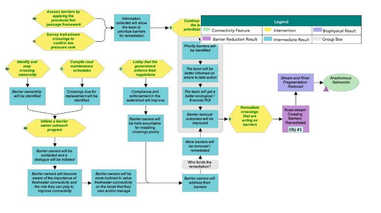
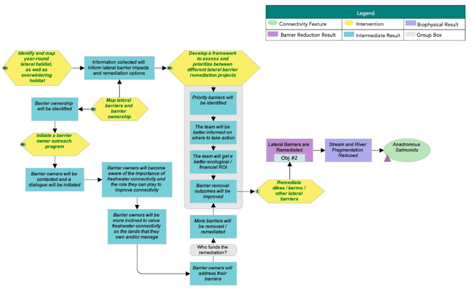
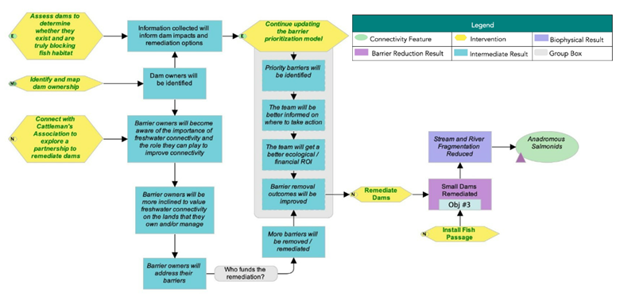
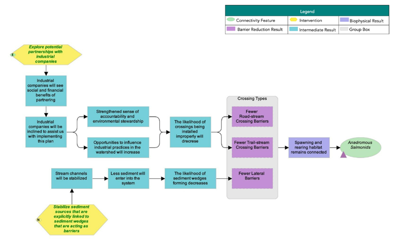

ID | Actions | Details | Feasibility | Impact | Effectiveness |
|---|---|---|---|---|---|
1.1 | Rehabilitate crossings that are acting as barriers | This intervention includes some projects that would be led by the Planning Team with conservation funds (e.g., orphaned barriers or those owned by individuals), while other rehabilitation projects would be the responsibility of the barrier owner. Industry will have to be engaged to successfully implement this intervention. Horsefly River Roundtable can help with finding local people to implement rehabilitation projects. | High | Very high | Effective |
1.2 | Lobby the government to enforce their regulations | This can apply to both provincial and federal governments. For example, advocating for increased discretionary decisions to remove barriers to fish passage. One action could be to submit barrier assessment data to show proof that regulations are not being followed. | Very high | High | Effective |
1.3 | Initiate a barrier owner outreach program for locations on the barrier rehabilitation shortlist | Work with landowners/users (e.g., ATV groups) to identify and rehabilitate their aquatic barriers. Education component can help prevent barriers from being installed in the first place. HRR to reach out to owners of confirmed barriers to discuss rehabilitation options; CWF to reach out to provincial representatives. | Very high | Very high | Very effective |
1.4 | Knowledge Gap: Continue updating the barrier prioritization model | The model has been updated to reflect 2023 field assessments and review of field results. | Very high | High | Effective |
1.5 | Knowledge Gap: Assess barriers by applying the provincial fish passage framework | Very high | Very high | Very effective | |
1.6 | Knowledge Gap: Identify and map crossing ownership | For barriers on the barrier rehabilitation shortlist. | Very high | Very high | Very effective |
1.7 | Knowledge Gap: Compile road maintenance schedules | Ground-truthing is important, as the schedules do not always reflect what happens in the field. | High | High | Effective |
1.8 | Knowledge Gap: Survey trail-stream crossings to confirm low-pressure rating | Trail-stream crossings were surveyed by WLFN in 2022. No barriers were identified. | Very high | Medium | Need more information |
The following situation model was developed by the WCRP Planning Team to “map” the project context and brainstorm potential actions for implementation. Green text is used to identify actions that were selected for implementation (see Strategies & Actions), and red text is used to identify actions that the project team has decided to exclude from the current iteration of the plan, as they were either outside of the project scope, or were deemed to be ineffective by the Planning Team.

Strategies and Actions
The Planning Team identified five broad strategies to implement through this WCRP: 1) crossing rehabilitation, 2) lateral barrier rehabilitation, 3) dam rehabilitation, 4) barrier prevention, and 5) communication and education. Individual actions were qualitatively evaluated based on the anticipated effect each action will have on realizing on-the-ground gains in connectivity. Effectiveness ratings are based on a combination of “Feasibility” and ”Impact”. Feasibility is defined as the degree to which the project team can implement the action within realistic constraints (financial, time, ethical, etc.), and Impact is the degree to which the action is likely to contribute to achieving one or more of the goals established in this plan.
Strategy 1: Crossing Rehabilitation
Strategy 2: Lateral Barrier Rehabilitation
ID | Actions | Details | Feasibility | Impact | Effectiveness |
|---|---|---|---|---|---|
2.1 | Rehabilitate dikes / berms / other lateral barriers | High | Very high | Effective | |
2.2 | Initiate a barrier owner outreach program | Very high | Very high | Very effective | |
2.3 | Knowledge Gap: Identify and map year-round lateral habitat, as well as overwintering habitat | Explore the use of a drone to identify lateral habitat. Volunteers from the HRR will conduct field habitat assessments following modules in the Pacific Streamkeepers Handbook to assess disconnected lateral and overwintering salmon habitats in the Horsefly River watershed. The first phase of this project was initiated in 2022. | Very high | Very high | Very effective |
2.4 | Knowledge Gap: Map lateral barriers and barrier ownership | Focus on identifying ownership of priority lateral barriers that we want to rehabilitate in the short term. | Very high | Very high | Very effective |
2.5 | Knowledge Gap: Develop a framework to assess and prioritize among different lateral barrier rehabilitation projects | CWF is leading a pilot project in the Lower Nicola River watershed to develop methods for identifying and prioritizing lateral barriers to anadromous salmonids. | Very high | Very high | Very effective |
Strategy 3: Dam Rehabilitation
ID | Actions | Details | Feasibility | Impact | Effectiveness |
|---|---|---|---|---|---|
3.1 | Rehabilitate Dams | Medium | Very high | Need more information | |
3.2 | Install Fish Passage | Medium | High | Need more information | |
3.3 | Connect with BC Cattleman's Association to explore a partnership to rehabilitate dams | This may involve exploring alternative water management actions that would allow for the rehabilitation of irrigation dams. | High | Medium | Need more information |
3.4 | Knowledge Gap: Continue updating the barrier prioritization model | Very high | High | Effective | |
3.5 | Knowledge Gap: Assess dams to determine whether they exist and are truly blocking fish habitat | All known and mapped dams in areas with mapped key habitat have been assessed. No barriers to fish passage identified. Further assessment of McKinley Dam for passage efficiency is recommended. | Very high | High | Effective |
3.6 | Knowledge Gap: Identify and map dam ownership | All known and mapped dams in areas with mapped key habitat have been assessed. No barriers to fish passage identified. | Very high | Very high | Very effective |
Strategy 4: Barrier Prevention
ID | Actions | Details | Feasibility | Impact | Effectiveness |
|---|---|---|---|---|---|
4.1 | Explore potential partnerships with industrial companies | Invite industrial players to a workshop on how to apply crossing / lateral barrier BMPs. BMPs could include those that minimize the need for road-stream crossings. | Very high | High | Effective |
4.2 | Stabilize sediment sources that are explicitly linked to sediment wedges or erosion that are acting as barriers | This could include numerous bank stabilization techniques, including restoring riparian vegetation. This applies to some tributaries that have altered confluence areas - the link needs to be made between confluence alterations and timing of movement for juvenile fish. Local ranchers and BC Cattleman's Association could be engaged, as well as forestry licensees. | Very high | Medium | Need more information |
Strategy 5: Communication and Education
ID | Actions | Details |
|---|---|---|
5.1 | Implement the WCRP Progress Tracking Plan | The WCRP Progress Tracking Plan will help the team determine if we are achieving our goals and objectives. |
5.2 | Develop a communication strategy to raise awareness and support for this WCRP | This intervention includes communicating both the WCRP and the collaborative process in developing it, as well as communicating outcomes (e.g., barrier rehabilitation). CNFASAR proposal: Horsefly River Roundtable (HRR) will work with CWF to develop outreach and communications materials, including press releases, social media content, a video, and content for their website. With HRR, CWF will present on fish passage issues and solutions at the annual Horsefly River Salmon Festival. |
Theories of Change
Theories of Change are explicit assumptions about how the identified actions will achieve gains in connectivity and contribute towards reaching the goals of the plan. To develop Theories of Change, the planning team made explicit assumptions for each strategy to clarify the rationale used for undertaking actions and provide an opportunity for feedback on invalid assumptions or missing opportunities. The Theories of Change are results-oriented and clearly define the expected outcome. The following Theories of Change models were developed by the WCRP planning team to “map” the causal (“if-then”) progression of assumptions of how the actions within a strategy work together to achieve project goals.



